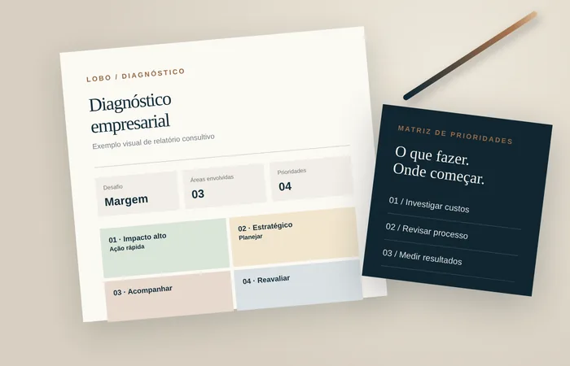
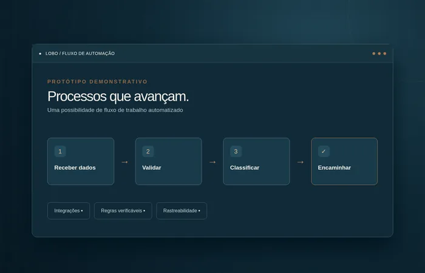
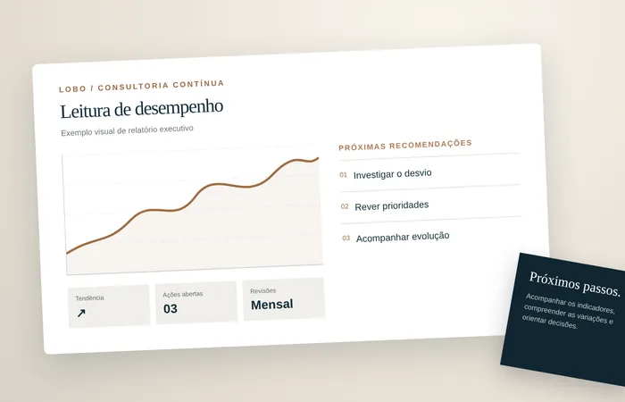
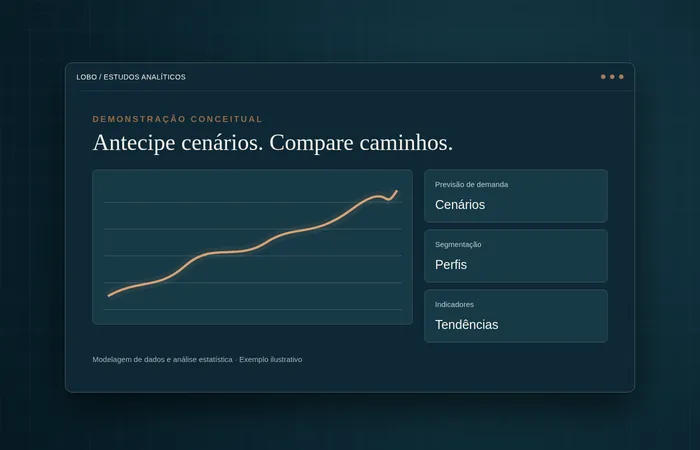

Consultoria empresarial · Dados e IA
Transparência para
Identificamos obstáculos, definimos prioridades e executamos melhorias para o seu negócio.
Converse sobre seu projeto



Sobre a Lobo
Em meio a tantas possibilidades, o que realmente importa?
A Lobo identifica o que limita seus resultados, recomenda prioridades e executa as melhorias adequadas — com dados e tecnologia quando fazem sentido.
Transformamos complexidade em clareza. E clareza em ação.
Sobre a LoboNossas ofertas
Três formas de avançar.
Descubra o que limita seus resultados e por onde começar.
Conheça a oferta↗ 02 / IMPLEMENTARProjetos de TransformaçãoDashboards, automações, agentes de IA e modelos preditivos.
Conheça a oferta↗ 03 / ACOMPANHARAcompanhamento EstratégicoInterprete resultados e tome decisões com mais segurança.
Conheça a oferta↗Imagens ilustrativas de possíveis entregas. Não representam projetos realizados para clientes.
Como trabalhamos
O método Lobo.
Diagnóstico
01 / Entender
Investigamos o negócio para encontrar causas, gargalos e oportunidades relevantes.
Decisão
02 / Priorizar
Organizamos opções e recomendamos onde investir com mais segurança.
Execução
03 / Transformar
Implementamos as melhorias e avaliamos resultados técnicos e de negócio.
Especialidades
Ferramentas certas.
Problemas reais.
Quatro competências para resolver desafios empresariais.